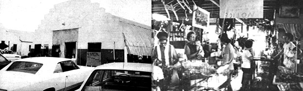

You Can Make First-Class Profits With A Secondhand Business
By Mable Scott
January/February 1975
by MABLE SCOTT
It's high time that someone told MOTHER's readers about a truly flexible be-your-own-boss moneymaking venture . . . one you can start for a small bag of jellybeans, and-with time and effort-build up to something big. I'm talking about the business that keeps my own family in winter boots, and oatmeal: a secondhand store. (In a way I'm rather reluctant to give away the deep, dark secrets of the trade. Then again, I welcome the chance to sort out some of the public's weird beliefs about dealers in used goods.)
Our introduction to the secondhand business came about through necessity several years ago. We were living on a 40-acre tract and my husband drew around $700 a month from a lumberyard in a nearby town. Then we bought a quarter horse for our kids to use as a 4-H club project and that mare turned out to be-for us, anyhow-the world's most expensive animal. Less than a week after the papers were signed, she kicked my mate in the face with both hind feet. It was a miracle that he lived through the experience.
Once out of the hospital, our breadwinner found that the lumberyard had changed hands and the new owner had brought in his own crew. So there my husband was: no job, no strength to look for another and five mouths to poke vittles into.
At that point I suggested that we borrow $500 from the local bank, rent a cheap building, purchase a pickup load of furniture at a nearby auction and sell it . . . the idea being to take the money we mad&, buy more stock and repeat the process. (We already had a garage full of the odds and ends I kept pouncing on at sales, fixing up and reselling 'elsewhere.) My husband admitted later that he thought this to be a ridiculous plan. All the same, he went along with it . . . because there was nothing else in sight and you can't lose if you have nothing to start with.
Well, the bank's officers (bless 'em!) went along with the idea and loaned us the money. And we soon found a building where another secondhand store had formerly operated (a boon since many of the old firm's customers came to us). Then we got the first load of furniture and The Jungle was in business.
Now I'm not going to sit here barefaced and claim that that's all there was to our fresh start. Not at all! We suffered through days and days of sitting on our small stock and praying that somebody would buy just a dollar's worth. The store was listed as belonging to me, but my husband was able to help as his strength increased. Meanwhile he was drawing unemployment (which provided our groceries), and I clerked at an auction one night each week and spent one morning cleaning our church's rectory. There was little time to worry about whether we were on the right track or out of our ever-lovin' minds.
Slowly, though, our trade picked up. One of the best gimmicks we had for building business turned out to be a more or less weekly ad in the local paper. I tried to make the wording catchy . . . and succeeded, I guess, since the editors gave us much more space than we paid for and threw, in some showy typesetting. They said people bought the paper just to read our notices!
A typical ad went like this:
The Jungle has stalled off creditors for another month and is still doing business under the fair trade system: Buy low, sell high. Remember . . . antiques made while you wait. Puppies given all children unaccompanied by parents. Free Coke with every $500 purchase. Browsing privileges extended to animals and people.
Or sometimes we'd paraphrase the advertising of the leading furniture stores. One firm's publicity said:
"When you see the big green truck go by, you know another lady has been made happy with furnishings from ____."
Our version:
"When you see the old beat-up pickup go by, you know another lady has been made happy because we bought her junk to sell to her neighbor."
(Incidentally, out of this experience has grown a weekly column of nonsense which I've now written several years for another paper. They even pay me. That's nice!)
Whether our ads really sold papers I don't know, but they did sell our goods. People started coming into the store strictly from curiosity, and stayed to buy.
As time went on, our business grew . . . but not quite enough to both finance the increasing amount of stock it required and pay us a decent wage. We kept the bookkeeping department at the local bank busy renewing old notes or tearing them up and making new ones. (Of course, you wouldn't necessarily need to do the same if you ran such an enterprise from your garage or didn't need a full-scale income. With three kids in grade school, though, we had to make money in quantity.)
I'll pass over briefly what was in fact a lot of blood, sweat and tears. My husband did carpentry work when the unemployment ran out and helped at the store as he could . . . and-finally!-we began paying off our notes. Then we found a large Quonset with three lots for sale outside the town's main business section on a well-traveled street. This was a steal at $8,500, and the Scott family (with a big assist from the bank) bought it.
Most regretfully we said goodbye to our 40 acres, purchased a two-story house and had it moved to one of the parcels adjoining the store. This worked out fine because we could keep an eye on the children while working next door. (Of course, we've never sold our dream of returning to the land when the offspring leave the nest . . . and, meanwhile, the business has kept them in pretty good feathers as they grow up. They've also developed self-reliance by assisting in the store and running the house.)
That's the surface history of our venture . . . but you're probably more interested in the do's and don'ts, the profit possibilities and some of the side benefits. So here goes:
I should say, first of all, that buying is really more important than selling. You have to get back twice what you give for most items in order to average out a living in the long run . . . and that's where your ability to size up salable merchandise comes in handy.
True, you can't win 'em all: You'll sometimes find yourself taking what you can get for an article or tossing it out the back door. On other goods, however, the margin of profit will be sensational. Suppose you buy a table for a dollar and sell it for ten. According to my bookkeeper husband you'll have made 900% on your investment, and where else could you match that?
Then again, right now is a good time to dispose of the prevalent myth that all secondhand dealers get rich by picking up costly items like carnival glass for next to nothing. Not very often! People now recognize the worth of most such articles. Sometimes, however, when you buy a package deal-a complete houseful of furniture-you will get a few valuables in the collection. A certain number of antiques will come to you in the same way. These help draw customers, but won't sell for as much as they would in a strictly antique store and won't give you the return you get from plain "used" pieces. (Profit on junk beats the good stuff all to heck . . . which means, incidentally, that it's wise to let the buyer do the refinishing. Anyhow, he has more fun that way and you do less work.)
Buying secondhand items in quantity is almost always a good idea whether or not you get any antiques as windfalls. Keep your bank balance as healthy as possible so you'll be able to take advantage of such bulk purchase opportunities as they arise. We once bought the contents of a local hotel that was to be torn down-furniture, rugs, plumbing, light fixtures, dishes, etc.-and did very well on the transaction. The wash basins, for instance, cost us 25 cents apiece and sold like hot cakes at $2.50 to $7.50. (Used plumbing is always in demand among owners of rental property.)
There's also a certain sentiment about anything that belonged to an old landmark. People will buy an unmarked glass simply because it comes from a particular hotel. The same is true of an historic house. Customers will practically beg you to tell them that some object was purchased from the Jedediah Plunkett mansion . . . until you're almost tempted to bring out all your "clinkers" and palm them off as part of old Jed's estate.
We've always resisted such temptations, however, and made a special effort to remain honest. In the long run, we feel, a Straight Arrow policy pays off better than tricks . . . and brings the same customers back time after time. Some games, though, are fair enough . . . like the gimmick of rearranging your merchandise. If something doesn't sell, don't let it sit in one part of the store. Shift it to another location, and the folks who overlooked the article before will discover it and think it's just come in.
It's also quite legitimate to take advantage of garage sales. Since you can select what you really need and leave the rest, this is a good alternative to bidding for whole lots that contain many unsalable items. Even if you make a tidy profit on some castoff later on, the householder did after all set his own price and can hardly claim you "stole" those old fire irons or whatever. This convenient source of stock has consoled us for the loss of our line in secondhand clothes, which we gave up when rummage sales started springing up everywhere and selling used garments for practically nothing.
One thing we do miss about the clothing end of the business is that we used to keep our own family dressed from the store's selection (while still making a profit on the articles we didn't want). The secondhand trade has many more fringe benefits of the same kind. There's scarcely a thing we need that won't show up if we're patient enough to wait for it: toothpaste, hair oil, canned goods, combs, permanent wave kits, even groceries. True, they may not be, the brands we prefer . . . but who can't switch if the price is right?
You may also have guessed that our home furnishings constantly revolve as we find articles we like better than what we already have and exchange them for our old things (which, in turn, become stock for the store). It breaks my heart to think of the new TV, washer and kitchen stove we bought shortly before we went into business. We could have purchased such equipment, scarcely used, at one-fifth of its original price if we'd just waited a little longer.
We recently enclosed our front porch with four large casement windows-framed, with screens to match-for which we paid $3.00 each. The boxing was odds and ends of boards we had accumulated, including some from the tops of several 250 tables. The doors were used, out of our stock. Even the paint was economical (we got it wholesale), since we're a dealer for the Old South line of preservatives.
One more extra: Our dealer's license-which cost nothing-comes in handy for private purposes . . . at auto auctions, for instance. Our '63 Plymouth station wagon cost us $650 in '65, and that sure beat the lot price.
Speaking of licenses, we advertise that "we buy, sell or trade anything but elephants". That's not quite true, because there are a few things secondhand dealers can't handle without a special permit: plants, food, used mattresses. That last restriction really isn't fair, by the way, since mattresses can be sold by individuals or at auctions or garage sales . . . which pretty well cancels the health protection angle. Nobody can forbid us to give away those items, however, and we do: We sell a bed, a cup, even a safety pin and throw in the you-know-what as a bonus.
Finally, a word about the "trade" in our slogan. There's one class of transaction which we handle in that manner, to save taxes: the occasions in fall or winter when a customer brings in, say, a cooler that he wants to exchange for a stove. To keep the government happy we count that as an even swap . . . something you don't want to do in the ordinary course of business. (The rule of thumb is, "Always draw some cash difference.")
Well, that's about it, and I hope it helps. If you'd like to know more, we'd be glad to give you pointers or discuss your entry into a similar venture. Believe me, this is a perfect business for those who want to regulate their income to their desires. If you need a lot of money (as we did), you can work for it . . . but if you want to close up and go fishing, you can do that too. And don't worry about location! A cabin in the country is fine. Customers love to drive out to a quaint setting when they're buying secondhand items . . . and it won't hurt a thing if you're a little quaint too!
 Photos By Jim Richardson |
 |
|